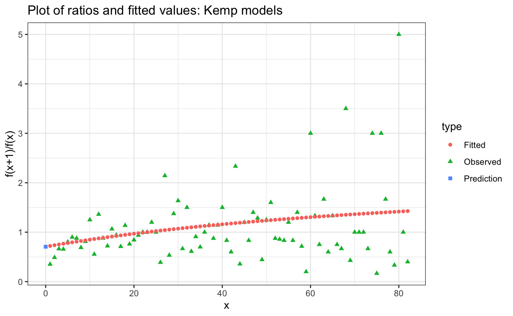
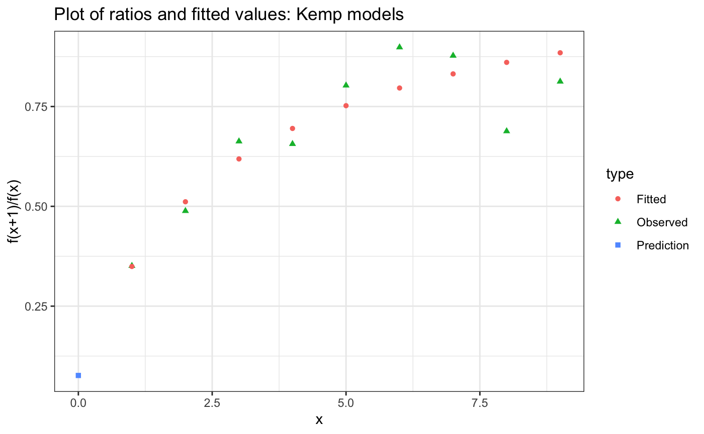

vignettes/intro-diversity-estimation.Rmd
intro-diversity-estimation.Rmdbreakaway is a package for estimating species richness. This vignette will lead you through how species richness estimation works, how to get an estimate of species richness using breakaway.
We will also talk about diagnosing and fixing model misspecification.
Download the latest version of the package from github.
Note that we are not continuing to maintain the CRAN version of breakaway at this time, so avoid install.packages("breakaway").
If you are not accustomed to using the pipe in R (the operator %>%), I strongly encourage you to start using it. It will make your code easier to read and write. Here is how to install and load it:
Typically, when you sample species (or groups) from a population, you won’t see every individual in the population. This means that you may not see every species in the population. The species richness that you observed in your sample will generally be lower than the species richness in your population.
The best way to correct this issue is to estimate the number of species that are present in your population but missing from the sample. breakaway provides software to do this.
Sometimes modeling observed richness is fine and doesn’t cause a problem for modeling or inference. However, especially when some populations are sampled more intensively than others (e.g., your sequencing depth is higher in some samples than others), samples should not be directly compared without adjustment. We recommend getting into the habit of estimating the number of missing species before making conclusions about diversity.
Note that while this problem has been called “species richness” for historical reasons, you can also estimate the richness at the level of strain (or sub-species), genus, family, etc. The input data that you provide determines the taxonomic order on which breakaway estimates the richness. Therefore, if you would like to estimate strain richness, simply give breakaway abundance data at the strain level. phyloseq has a nice function called tax_glom() that can help with this.
Species richness estimates use the structure of the data that you observed to predict how many species were missing. Essentially, if there are only a few species in the sample that were observed rarely, that suggests that you probably observed most of the diversity in the community. In this case, the total species richness estimate would be close to the observed species richness. Alternatively, if there were many species in the sample that were observed infrequently (such as once or twice), this suggests that there were many species that were observed zero times. In this case, the species richness estimate would be larger than the observed species richness. breakaway uses statistical models to determine how much larger it should be.
In their very cool paper “Extensive Unexplored Human Microbiome Diversity Revealed by Over 150,000 Genomes from Metagenomes Spanning Age, Geography, and Lifestyle” (doi.org/10.1016/j.cell.2019.01.001), Pasolli and co-authors assembled 4,930 species-level genome bins using publicly available shotgun metagenomic data. Our goal is to estimate the species-level diversity of human host associated microbes.
First, let’s read in the data:
# install.packages("openxlsx")
pasolli_et_al <- openxlsx::read.xlsx("https://ars.els-cdn.com/content/image/1-s2.0-S0092867419300017-mmc4.xlsx", sheet = 2)The “frequency count table” is the basic data structure for estimating species richness. It is a table with two columns: the second column indicates the number of species observed j times, where the first column contains j. Let’s take a look at the first 10 columns of the frequency count table for the Pasolli et al dataset:
ft <- pasolli_et_al$`#.Samples` %>% make_frequency_count_table
ft %>% head(10)## Var1 Freq
## 1 1 1972
## 2 2 692
## 3 3 338
## 4 4 224
## 5 5 147
## 6 6 118
## 7 7 106
## 8 8 93
## 9 9 64
## 10 10 52So 1972 species were observed once, 692 were observed twice, and 52 were observed ten times.
ft %>% tail(10)## Var1 Freq
## 298 1584 1
## 299 1629 1
## 300 1805 1
## 301 1811 1
## 302 1844 1
## 303 1925 1
## 304 2169 1
## 305 2559 1
## 306 2983 1
## 307 3453 1The common species are at the other end of the frequency count table: the most common species was observed 3453 times. There was only ft[nrow(ft), 2] species observed 3453 times.
Let’s take a look to see how many species were observed in the dataset:
ft %>% sample_richness## Estimate of richness from method Plug-in:
## Estimate is 4930
## with standard error 0
## Confidence interval: (4930, 4930)Cool! We corroborated the abstract of the paper and saw that 4930 species level genome bins were identified.
If you’re not accustomed to using %>%, here is a quick demo: argument %>% function. It’s equivalent to executing function(argument). So essentially we just ran sample_richness(ft), but we stated the argument first. The pipe operator %>% becomes especially useful when you want to compound multiple functions. Here is a great introduction, and here is a lecture I gave to our department’s PhD students about it.
breakaway
The simplest way to estimate species richness with breakaway is as follows:
estimated_richness <- breakaway(ft)
estimated_richness## Estimate of richness from method breakaway:
## Estimate is 7724
## with standard error 2495.5
## Confidence interval: (4942, 650226)So breakaway estimates that there are 7724 species level genome bins in the population of human host associated species level genome bins. That’s 2794 more to discover – how exciting!
breakaway also gives an estimate of the standard deviation in the estimate: about 2495. That’s pretty large! If reflects that species richness estimation is a challenging prediction problem. Do not shy away from large standard errors – they remind you that there is a lot of uncertainty in the estimate! When we go to talk about the function betta in another tutorial (stay tuned!) we will see why this is okay. The short answer is that we typically are interested in comparing diversity across multiple samples, and so uncertainty in individual samples doesn’t cause much of a problem.
The method breakaway actually fits a suite of models, and then selects which is the best amongst them. Check out the paper for more details. But how can we diagnose if the model is reasonable?
First, we need to find out what model was fit:
estimated_richness$model## [1] "Kemp"Kemp models were originally described in the breakaway paper. They are based on fitting flexible non-linear models (that have a probabilistic interpretation!) to ratios of contiguous frequency counts. We can therefore investigate model specification by looking at the plot of fitted ratios:
plot(estimated_richness)
Yikes! That doesn’t look so good. We are definitely not following the curve near x = 0.
It looks like what is happening is that breakaway is putting too much value on high frequency counts. This isn’t good, since we want to be prioritising the low-frequency counts. The way to do that is with the cutoff parameter. cutoff specifies the maximum number of frequency counts to use in fitting.
Based on the above plot, I’m going to make the subjective decision to only use the first 10 frequency counts for estimation. The pattern in the frequency counts appears to level off significantly after 10 counts, and furthermore, species level genome bins observed more than 10 times are likely to be uninformative for the structure of rare species.
To use only the first 10 frequency counts, we run
estimated_richness_10 <- breakaway(ft, cutoff = 10)
estimated_richness_10## Estimate of richness from method breakaway:
## Estimate is 28290
## with standard error 7561.18
## Confidence interval: (5028, 5580454)
## Cutoff: 10Wow! That changed our original estimate of 7724 significantly – now we think there are 28290 species level genome bins! What’s happening?
Essentially the structure of this data indicates that there are a huge number of unobserved species. If you follow the curve of the frequency ratios (the plot above), it looks like the y-intercept is going to be close to \(y=0\). breakaway’s estimate predicts that the number of unobserved species is
\[ \text{number of species observed once} \div \text{the fitted intercept on the frequency ratio plot}. \]
Therefore, as that intercept gets close to zero, the estimate of the number of unobserved species gets really large! Intuitively, this makes sense – if there are so many rare species, we cannot reliably predict how many unobserved species there are. There is some minimal amount of information needed to estimate total species richness!
Note: Last time we checked (September 2021), breakaway, with the default settings, produced an estimate of 7724. If this number has changed significantly since then, it’s because we are constantly making improvements to the code base, which may change estimates – usually by a little but sometimes by more. Please let me know or log an issue to let us know if this occured!
I’m going to wrap up this tutorial by saying that most datasets do not have this many rare species, and species richness estimation is more reliable with fewer rare species. Needless to say, there are a lot of unobserved species level genomes in human host-associated microbiomes, and I look forward to seeing more and more amazing microbes being discovered in the coming years.
As mentioned previously, breakaway executes a model selection routine. We see that with the new cut-off, we have a different model:
estimated_richness_10 %$% model## [1] "Negative Binomial"So breakaway ended up choosing the Chao-Bunge estimator, which is based on a Negative Binomial model. This model is less flexible than the Kemp models discussed previously, but has lower variance in estimation. Essentially if the standard error exceeds the estimate in the Kemp model, breakaway moves on to less complex estimates which have lower variance. Unfortunately the Chao-Bunge doesn’t lend itself to diagnosing model misspecification.
If you are happy to take on higher variance (e.g., because you have multiple samples and ultimately you will combine them together), you can do so with the following:
estimated_richness_kemp_10 <- kemp(ft, cutoff = 10)
estimated_richness_kemp_10## Estimate of richness from method kemp:
## Estimate is 30741
## with standard error 38552.78
## Confidence interval: (4969, 16986096)Kemp estimates always allow you to check for model misspecification:
estimated_richness_kemp_10 %$% plot
Now this looks pretty good!